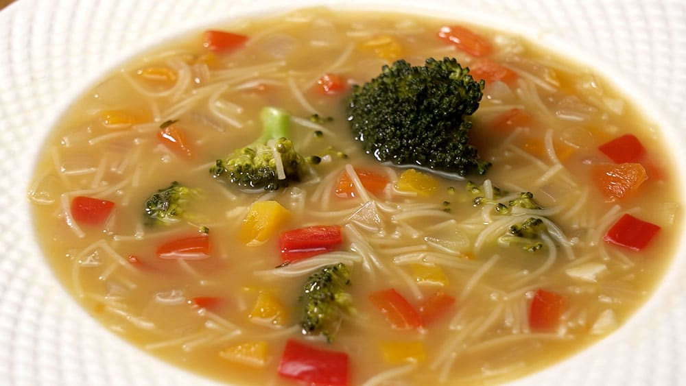

RECETA DE SOPA DE FIDEOS CON VERDURAS
Ingredientes
- 150g De fideos finos
- 1l De caldo de verduras
- 2 Zanahorias
- 1 Cebolla
- 1/2 Brócoli
- 1 Pimiento rojo
- 1 Pimiento verde
- 200g De calabaza
- Sal y pimienta
- Aceite de oliva
Paso a paso
- En una cazuela a fuego medio, ponemos un chorrito de aceite. Cuando esté caliente, añadimos las zanahorias, la cebolla, el pimiento rojo, el pimiento verde y la calabaza, todo ello bien picado. Salpimentamos y cocinamos todas las verduras durante alrededor de unos 5 minutos, removiendo con frecuencia.
- Pasado este tiempo, vertemos el caldo para nuestra sopa de fideos con verduras. Subimos la potencia del fuego hasta que rompa a hervir y a continuación, dejamos que todo se cocine otros 10 minutos más mientras seguimos removiendo con frecuencia, a fuego medio.
- Hecho esto, añadimos el brócoli cortado en ramitas. Dejamos que se cocine durante otros 2 minutos y finalmente, agregamos los fideos. Cocinamos todo durante unos 5 minutos más mientras removemos de nuevo con cierta frecuencia. Cuando los fideos estén al dente, corregimos de sal y de pimienta y servimos.
Resultado final
